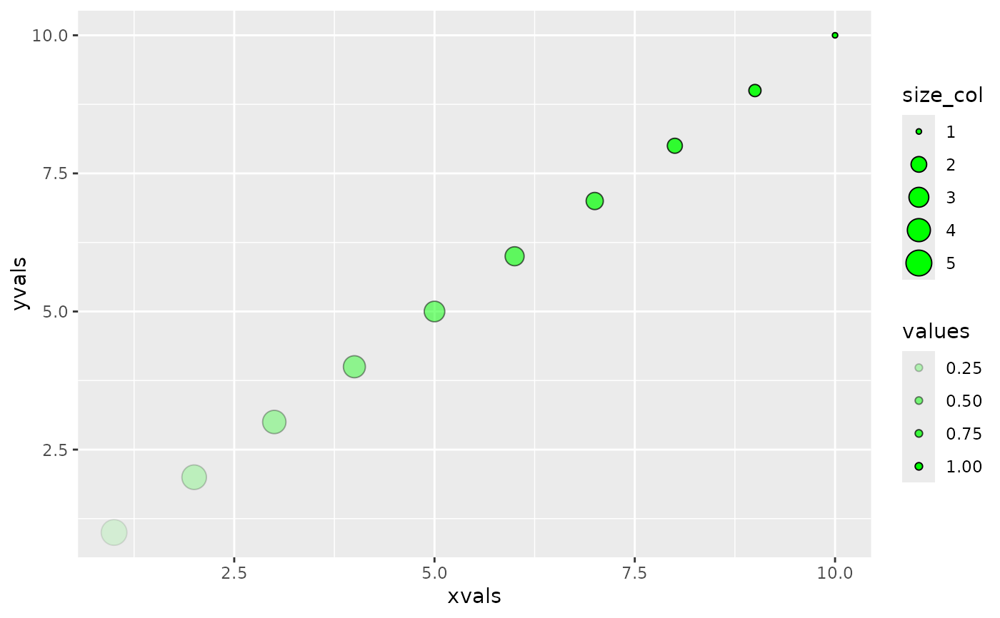
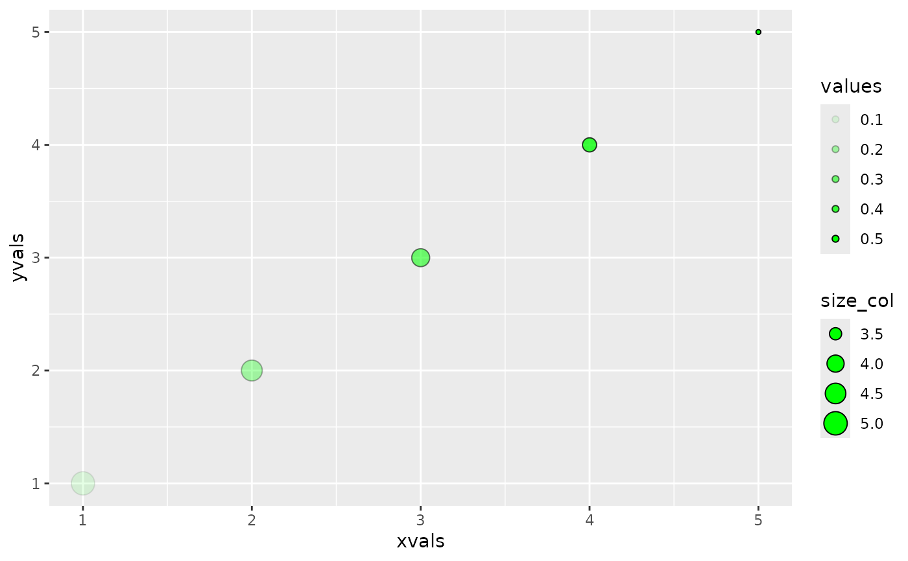
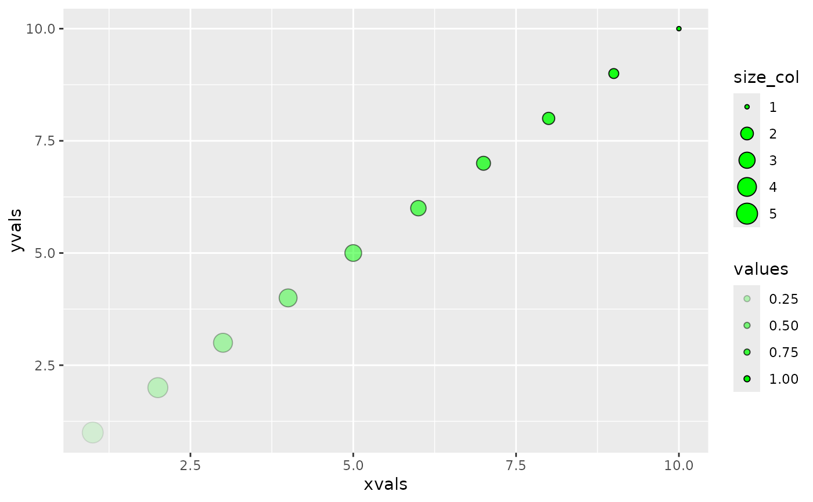
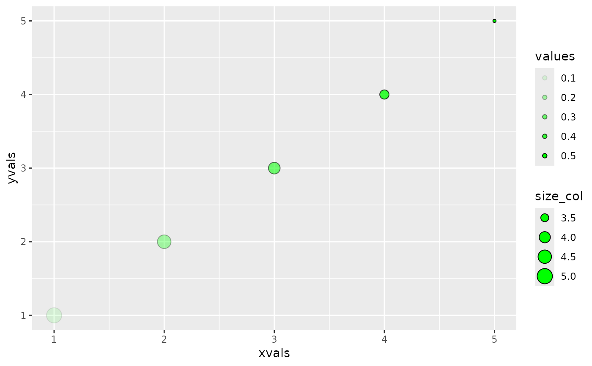

Based on a set of named inputs, organize them into either
ggplot2 aesthetic mappings or toplevel params based on whether they are or
are not of the classes quosure, name, or a language object. The data
param may be applied here or added afterwards
This is mainly a convenience for developers. Users should still use aes()
and quo() for their environment-enclosing characteristics. Inside of
packages however, the proper environments for code to run is already
available, or can be already processed before passing to plotting.
Arguments
- ...
One or more named plotting params. Entries should either be individually named params or lists of named parameters /
aes()generated aesthetic lists.- data
data to plot
- warn_duplicates
logical. Warn when aes names provided through ... overlap.
See also
Other ggplot2 plotting wrangling functions:
combine_aes()
Examples
# data to use
library(ggplot2)
d <- data.frame(
xvals = seq(10),
yvals = seq(10),
values = seq(0.1, 1, by = 0.1),
size_col = seq(5, 1, length.out = 10)
)
# ----- single step ----- #
p_single <- gg_param(
data = d,
x = as.name("xvals"), # aes
fill = "green", # toplevel
aes(
size = size_col, # aes
y = yvals # aes
),
show.legend = TRUE, # toplevel
list(
shape = 21, # toplevel
alpha = as.name("values") # aes
)
)
ggplot() + do.call(geom_point, p_single)
 # ----- multistep appending ----- #
p0 <- list()
# add aesthetics directly through assignment
p0$x <- as.name("xvals")
p0$show.legend <- TRUE
# add aesthetics through `c()` list concatenation
# list objects are unnamed and thus are best added this way
p0 <- c(p0, list(fill = "green"))
p0 <- c(p0, aes(size = size_col, y = yvals))
p0 <- c(p0, list(shape = 21, alpha = as.name("values")))
# add data
p0$data <- d
# `quote = TRUE` must be used when using `do.call()` for this
p_multi <- do.call(gg_param, p0, quote = TRUE)
ggplot() + do.call(geom_point, p_multi)

# ----- nested appending ----- #
p_nest <- gg_param(p_single, p_multi)
#> Warning: multiple `data` objects given. Using last one.
#> Warning: Duplicate aes param found for: `x`, `y`, `size`, `alpha`.
#> Using last provided
#> Warning: Duplicate toplevel param found for: `fill`, `show.legend`, `shape`.
#> Using last provided
p_nest_sub <- gg_param(p_single, p_multi, data = d[1:5,]) # change the data to use
#> Warning: Duplicate aes param found for: `x`, `y`, `size`, `alpha`.
#> Using last provided
#> Warning: Duplicate toplevel param found for: `fill`, `show.legend`, `shape`.
#> Using last provided
ggplot() + do.call(geom_point, p_nest)
ggplot() + do.call(geom_point, p_nest_sub)

# ----- multistep appending ----- #
p0 <- list()
# add aesthetics directly through assignment
p0$x <- as.name("xvals")
p0$show.legend <- TRUE
# add aesthetics through `c()` list concatenation
# list objects are unnamed and thus are best added this way
p0 <- c(p0, list(fill = "green"))
p0 <- c(p0, aes(size = size_col, y = yvals))
p0 <- c(p0, list(shape = 21, alpha = as.name("values")))
# add data
p0$data <- d
# `quote = TRUE` must be used when using `do.call()` for this
p_multi <- do.call(gg_param, p0, quote = TRUE)
ggplot() + do.call(geom_point, p_multi)

# ----- nested appending ----- #
p_nest <- gg_param(p_single, p_multi)
#> Warning: multiple `data` objects given. Using last one.
#> Warning: Duplicate aes param found for: `x`, `y`, `size`, `alpha`.
#> Using last provided
#> Warning: Duplicate toplevel param found for: `fill`, `show.legend`, `shape`.
#> Using last provided
p_nest_sub <- gg_param(p_single, p_multi, data = d[1:5,]) # change the data to use
#> Warning: Duplicate aes param found for: `x`, `y`, `size`, `alpha`.
#> Using last provided
#> Warning: Duplicate toplevel param found for: `fill`, `show.legend`, `shape`.
#> Using last provided
ggplot() + do.call(geom_point, p_nest)
ggplot() + do.call(geom_point, p_nest_sub)
